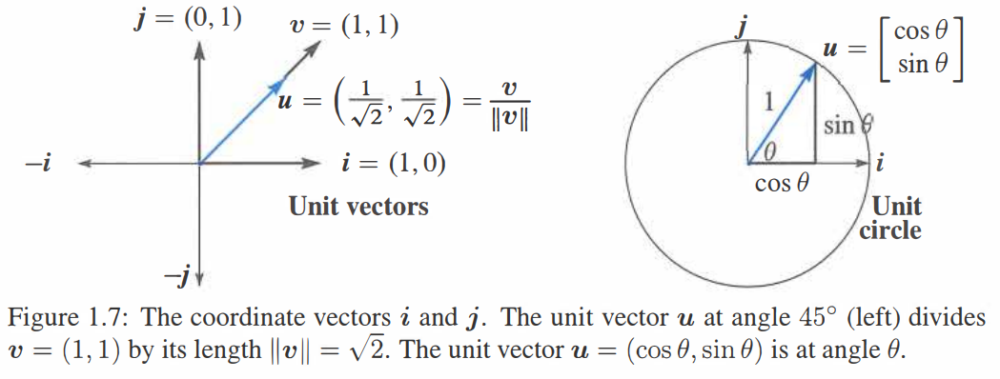
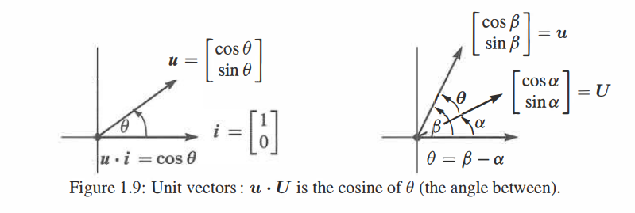

前言
我很高兴您使用线性代数导论的第五版。这是我在 MIT OpenCourseWare (ocw.mit.edu 和 YouTube) 上的视频讲座的文本。我希望这些讲座对您有用 (甚至可能很有趣！)。
数百所高校选择这本书作为基本线性代数课程教材。带薪休假让我有机会准备了两个关于概率统计和数据理解的新章节。当然也还有很多其他的改进——可能只有作者自己意识到... 以下为针对学生和所有读者的新增内容:
每小节以简短的摘要开始用以解释该节的内容。当您阅读新章节或者阅读之前的章节以在脑中回顾和组织已学内容，这些行可以作为快速指南并能帮助记忆。
另一个巨大的改变是本书的网站 math.mit.edu/linearalgebra。网站现在包含了本书中 Problem Sets 部分的答案。由于空间无限，这比只打印简短的答案更加灵活。目前有三个主要网站：
ocw.mit.edu 该 OpenCourseWare 网站有来自数千名学生和线性代数教师的信息。18.06 和 18.06SC 等课程包含完整学期课程的视频讲座。讲座根据本教材提供了对整个科目独立的复习——使得教授的时间保持空闲，而学生的则可能学到凌晨2点。(读者完全可以不用待在教室里。) 世界上有六百万人观看了这些视频 (amazing)。希望它们对您有帮助。
web.mit.edu/18.06 该网站包含当前学期已讲课程的家庭作业和测试 (含解答)，最早可以追溯到1996年。还有一些复习题，Java演示程序，课程代码和阅读材料 (包括视频讲座)。我的目标是通过能提供的所有课程材料尽可能让这本书对您有用。
math.mit.edu/linearalgebra 这已成为一个活跃的网站。现在包含 Solutions to Exercises 模块——提供阐述想法的场所。同时还有许多不同来源的新练习——有练习题，教科书的例题，MATLAB，Julia 和 Python 代码以及一系列的考试题 (包括 18.06 和其他课程) 用于复习。
欢迎访问线性代数网站。建议请发送至邮箱 linearalgebrabook@gmail.com。
第五版
封面展示了四个基本的子空间——左边的行空间和零空间，右边的列空间和 \(A^\mathrm{T}\) 的零空间。像这样说明一门学科的中心思想是不同寻常的！当您在第 3 章遇到这四个空间时，您将会理解为什么这张图片对线性代数如此重要。
在我的第一本书中，它们被命名为四个基本子空间并从一个矩阵 \(A\) 出发。\(A\) 的每一行是 \(n\) 维空间的一个向量。当矩阵有 \(m\) 行时，每一列是 \(m\) 维空间的一个向量。在线性代数中的关键操作是做列向量的线性组合。这正是矩阵——向量乘法的结果。\(Ax\) 是 \(A\) 的列的一个线性组合。
当我们取遍列向量的所有线性组合 \(Ax\)，就得到了列空间。如果这个空间包含向量 \(b\)，我们就可以解方程 \(Ax=b\)。
请特别注意1.3节，其中这些想法很早就出现了——并附有两个具体示例。您不必强迫自己在一天了解向量空间的所有细节！但在1.3节您将会看到本书中的第一个矩阵，以及它的列空间的一个图像。甚至包含 逆 矩阵以及它与微积分的联系。您将会以一种最好和最有效的方式学习线性代数语言：应用它。
每一章的每小节的结尾都有大量的习题。它们要求您运用在该小节的思想——列空间的维数，空间的一组基，矩阵 \(A\) 的秩，逆，行列式和特征值。许多问题要求在一个小矩阵上动手进行计算, 它们广受好评。Challenge Problems 部分的习题更进一步，可能也更深入。下面给出四个例子：
Section 2.1: Which row exchanges of a Sudoku matrix produce another Sudoku matrix ?
Section 2.7: If \(P\) is a permutation matrix, why is some power \(P^k\) equal to \(I\) ?
Section 3.4: if \(Ax=b\) and \(Cx=b\) have the same solutions for every \(b\), does \(A\) equal \(C\) ?
Section 4.1: What conditions on the four vectors \(r,\ n,\ c,\ l\) allow them to be bases for the row space, the nullspace, the column space, and the left nullspace of a 2 by 2 matrix ?
写在课程前面
方程 \(Ax=b\) 可以线性组合的语言加以解释。向量 \(Ax\) 可以认为是 \(A\) 的列的一个线性组合。这个方程实际上是在求一个能够生成向量 \(b\) 线性组合。解向量 \(x\) 可以从三个层次进行求解，这三个层次都很重要：
- 直接解法 通过前向消除和后向替换来求解 \(x\)。
- 矩阵解法 使用逆矩阵求解：\(x=A^{-1}b\) (如果 \(A\) 有逆)。
- 特解 (对于 \(Ay=b\)) plus 零解 (对于 \(Az=0\))。本书封面展示了解向量空间 \(x=y+z\)。
直接消除法是科学计算中使用最为频繁的算法。将矩阵 \(A\) 变成三角形——之后能够快速得到解。我们也能对四个子空间有一个基本的了解。但不会一直把时间花在练习消除法... 之后会有一些好的想法。
每一台新的超级计算机的速度都会在 \(Ax=b\) 上测试：单纯的线性代数。但即使是超级计算机也不想计算逆矩阵：太慢了。矩阵逆给了一个最简洁的求解公式 \(x=A^{-1}b\) 但却不是计算速度最快的。同时每个人都必须知道行列式的计算会更慢——线性代数课程不应该从 \(n \times n\) 行列式公式开始。这些公式有一席之地，但不是第一位。
本书结构
在这篇序言中，您可以了解到本书的风格及其目标。这个目标是严肃的，要向您解释线性代数这个美丽又有用的数学分支。您将会看到线性代数的应用是如何强化其核心思想的。这本书循序渐进地从数字讲到向量，再到子空间。每一过程都是自然而然的，每个人都能理解。
以下是关于使用本书学习和教学的12点建议：
-
第 1 章首先讲述向量和点积。如果之前的课堂已经了解过，可以重点关注线性组合。1.3节提供了三个独立的向量——线性组合能够填满整个3维空间，和位于一个平面的三个相关向量。这两个例子是学习线性代数的开始。
-
第 2 章 \(Ax=b\) 的行的图像和列的图像。线性代数的核心就在于 \(A\) 的行和 \(A\) 的列之间的联系：相同的数目但非常不同的图像。然后开始矩阵代数：一个消除矩阵 (elimination matrix) \(E\) 乘以 \(A\) 得到零。目标是掌握整个过程——从 \(A\) 开始，与一系列的 \(E\) 相乘，最后得到 \(U\)。
消除 (Elimination) 从美丽的形式 \(A=LU\) 中可见一斑。下三角 \(L\) 包含了前向消去的步骤，\(U\) 是 上三角 的，用于后向替换过程。 -
第 3 章讲述线性代数的最佳层面：子空间。列空间包含列的所有线性组合。一个关键问题是：这些列中有多少是必要的 ？答案会告诉我们列空间的维数以及 \(A\) 的关键信息。我们最后会得出线性代数的基本定理。
-
当方程个数多于未知数个数时，几乎可以确定 \(Ax=b\) 没有解。我们不能抛弃每一接近当不完全精确的度量！当使用 最小二乘 求解时，关键点将会是矩阵 \(A^\mathrm{T}A\)。当 \(A\) 是矩形时，这个奇妙的矩阵在应用数学中无处不在。
-
行列式给出了之前的所有公式——Cramer法则，逆矩阵，\(n\) 维体积。我们不用这些公式进行计算。这些公式计算的很慢。但是 \(\det A=0\) 表示矩阵是奇异的：这是特征值的关键。
-
6.1节 解释 \(2 \times 2\) 矩阵的特征值。许多课程想提前讲述特征值。直接从第 3 章来到本章是完全合理的，因为 \(2 \times 2\) 矩阵的行列式是简单的。关键等式 是 \(Ax=\lambda x\)。
特征值和特征向量是理解方阵的相当新奇的方法。它们不仅用于 \(Ax=b\)，还用于动力学方程比如 \(du/dt=Au\)。这里的思想总是一致的：从特征向量的方向着手。在这些特殊的方向上，\(A\) 像一个单独的数 (特征值 \(\lambda\))一样作用并且此时问题是一维的。第 6 章一个本质上的重点是 对角化对称矩阵。当所有的特征值大于零时，矩阵被称为“正定的”。这个重要概念联系了课程的全部知识点——正主元 (pivot)、行列式和特征值以及能量。我努力在书中达到这一点，并用例子加以解释。
-
第 7 章是全新的一章。该章介绍了 奇异值 和 奇异向量。它们将所有矩阵分成简单的部分，按重要性排序。您将会看到一种压缩图片的方法。特别是您可以分析一个充满数据的矩阵。
-
第 8 章阐述 线性变换。这是没有坐标轴的几何，没有坐标的代数。当选择一组基时，我们得到了尽可能好的矩阵。
-
第 9 章从实数和实向量转向复向量和复矩阵。傅里叶矩阵 (Fourier matrix) \(F\) 将是我们见过的最重要的复矩阵。并且快速傅里叶变换 (快速乘以 \(F\) 和 \(F^{-1}\)) 是革命性的。
-
第 10 章通篇包含应用，远多于任何一门单独课程所需：
10.1 图和网络——基尔霍夫定律的边缘节点矩阵
10.2 工程中的矩阵——与矩阵方程平行的微分方程
10.3 马尔科夫矩阵——出现在谷歌的 PageRank 算法中
10.4 线性编程——新的约束 \(x \geq 0\) 和最小化代价
10.5 傅里叶级数——用于函数和数字信号处理
10.6 计算机图形学——通过矩阵移动、旋转和压缩图像
10.7 密码学中的线性代数——这一新部分编写起来很有趣。希尔密码不太安全。它使用模运算：从 \(0\) 到 \(p-1\) 的整数。乘法得到 \(4 \times 5 \equiv 1(mod\ 19)\)。对此解码得到 \(4^{-1} \equiv 5\)。 -
线性代数课程应该怎样包含计算？这可以得到对矩阵的新理解——每节课都会找到一个平衡点。MATLAB 和 Maple 以及 Mathematica 在不同方面非常强大。Julia 和 Python 都是开源的且可以直接在 Web 上直接获取。那些较新的编程语言同样也十分强大！
基本命令从第 2 章开始。然后第 11 章转向专业算法。您可以在网站上上传和下载本课程的代码。
-
关于概率和统计的第 12 章是新增的，具有真正重要的应用。当随机变量不相互独立时我们得到协方差矩阵。幸运的是它们是对称正定的。此时需要第 6 章的线性代数知识。
线性代数的多样性
微积分主要是关于一种特殊运算 (微分) 和其逆运算 (积分)。当然我认为微积分是很重要的... 但数学的许多应用是离散的不是连续的，是数字的而不是模拟的。数据的时代已经来临！你将会在我的网站上找到一篇名为 “Too Much Calculus” 的轻松文章。事实上，向量和矩阵已经成为人们需要了解的语言。
该语言的一部分是奇妙多样的举证。让我举三个例子 (依次是对称矩阵、正交矩阵和三角矩阵)： \[ \begin{bmatrix}2&-1&0&0\\-1&2&-1&0\\0&-1&2&-1\\0&0&-1&2\end{bmatrix}\ \frac{1}{2}\begin{bmatrix}1&1&1&1\\1&-1&1&-1\\1&1&-1&-1\\1&-1&-1&1\end{bmatrix}\ \begin{bmatrix}1&1&1&1\\0&1&1&1\\0&0&1&1\\0&0&0&1\end{bmatrix} \]
关键目标是学会 “阅读” 矩阵。你需要了解这些数字的意义。这其实是数学的本质——模式及其所代表的含义。
我使用 斜体 和 粗体 标出每页的关键词。我知道你有时候想快速阅读，寻找重要的行。
最后想分享一些想法给老师。你可能认为方向是对的，并且想知道你的学生是否准备好。给他们一个机会！数以千记的学生经常写信给我，经常提些建议，同时令人惊讶的是更多是表达感谢。他们知道这本书有一个目标，因为老师和教材都站在他们这边。线性代数是一门很棒的学科，好好享受它吧。
致谢
人生中最令人鼓舞的事是感觉自己正在做一些对自己人生有价值的事。数以百计的慷慨的读者向本书贡献了他们的想法、例子和更正 (还有最爱的矩阵)。谢谢你们所有人。
Ashley C. Fernandes 对本书的作成功不可没。他负责准备相应的 \(\LaTeX\) 文件。在他的支持下本书更改了6次，既是为了准确性同时也是自身的严格要求。和朋友一起共事是十分令人愉快的一件事。
MIT 数学系内外的朋友都很棒。Alan Edelman 负责 Julia 以及更多的部分，Alex Townsend 负责 7.1 节的标志示例，而 Peter Kempthorne 负责 7.3 节的金融示例：这些都很突出。Don Spickler 的密码学网站简直太棒了。我感谢 Jon Bloom、Jack Dongarra、Hilary Finucane、Pavel Grinfeld、Randy LeVeque、David Vogan、Liang Wang 和 Karen Willcox。7.3节的 “eigenfaces” 由 Matthew Turk 和 Jeff Jauregui 负责。Raj Rao 在密歇根大学的精彩课程加速了向奇异值迈出的一大步。
这本书的诞生主要归功于我在牛津大学的愉快假期。谢谢 Nick Trefethen 和其他所有人。其实是本书的读者！祝您工作顺利。
作者背景
这是我关于线性代数的第 9 本教材，我犹豫着要不要写我自己。重要的数学以及读者。接下来的段落添加了一些简短和个人的内容，以此表明本书是由人编写的。
我出生在芝加哥，在华盛顿、辛辛那提和圣路易斯上过学。我的大学是麻省理工学院 (我的线性代数课程 非常抽象)。之后去了牛津大学和加州大学洛杉矶分校，然后回到麻省理工学院很长一段时间。我不知道有多少学生学过 18.06 课程 (包括 ocw.mit.edu 上的视频的话超过了6百万)。采用新方式授课的时机是正确的，因为这个奇妙的主题只向数学专业的学生展示——我们需要向世界开放线性代数课程。
我对教授数学的生活非常感激，这种感激难以用言语表达。
Gilbert Strang
附言
我希望我下一本书 (2018?) 包含 数据学习 相关内容。这门学科正在迅速成长，尤其是“深度学习”。通过知晓基于由旧数据组成的训练集的函数，我们可以估计基于新数据的函数。这个估计仅仅使用一个简单的线性函数 \(f(x)=\max (0,x)\)。我们对 \(n\) 个矩阵乘法进行优化来实现深度的学习：\(\boldsymbol{x}_1=f(A_1 \boldsymbol{x}+\boldsymbol{b}_1),\boldsymbol{x}_2=f(A_2 \boldsymbol{x}_1+\boldsymbol{b}_2), \ldots, \boldsymbol{x}_n=f(A_n \boldsymbol{x}_{n-1}+\boldsymbol{b}_n)\)。在输入 \(\boldsymbol{x}\) 和输出 \(\boldsymbol{x}_n\) 之间是 \(n-1\) 个隐藏层——它们基于训练集估计 \(F(\boldsymbol{x})\)。
THE MATRIX ALPHABET
| \(A\) | Any Matrix | \(P\) | Permutation Matrix |
| \(B\) | Basis Matrix | \(P\) | Projection Matrix |
| \(C\) | Cofactor Matrix | \(Q\) | Orthogonal Matrix |
| \(D\) | Diagonal Matrix | \(R\) | Upper Triangular Matrix |
| \(E\) | Elimination Matrix | \(R\) | Reduced Echelon Matrix |
| \(F\) | Fourier Matrix | \(S\) | Symmetric Matrix |
| \(H\) | Hadamard Matrix | \(T\) | Linear Transformation |
| \(I\) | Identity Matrix | \(U\) | Upper Triangular Matrix |
| \(J\) | Jordan Matrix | \(U\) | Left Singular Vectors |
| \(K\) | Stiffness Matrix | \(V\) | Right Singular Vectors |
| \(L\) | Lower Triangular Matrix | \(X\) | Eigenvector Matrix |
| \(M\) | Markov Matrix | \(\varLambda\) | Eigenvalue Matrix |
| \(N\) | Nullspace Matrix | \(\varSigma\) | Singular Value Matrix |
Introduction to Vectors
线性代数的核心是两个运算——均作用于向量。向量相加得到 \(\boldsymbol{v}+\boldsymbol{w}\)。与数字 \(c\) 和 \(d\) 分别相乘得到 \(c \boldsymbol{v}\) 和 \(d \boldsymbol{w}\)。组合两种运算 (\(c \boldsymbol{v}\) 与 \(d \boldsymbol{w}\) 相加) 得到 线性组合 \(c \boldsymbol{v} + d \boldsymbol{w}\)。
线性组合 \(\qquad c\boldsymbol{v}+d\boldsymbol{w}=c \begin{bmatrix}1\\1\end{bmatrix}+d \begin{bmatrix}2\\3\end{bmatrix}=\begin{bmatrix}c+2d\\c+3d\end{bmatrix}\)
例子\(\qquad \boldsymbol{v}+\boldsymbol{w}=\begin{bmatrix}1\\1\end{bmatrix}+\begin{bmatrix}2\\3\end{bmatrix}=\begin{bmatrix}3\\4\end{bmatrix}是\ c=d=1\ 时的线性组合\)
线性组合在这个主题中非常重要！有时我们想要一个特定的组合，选取 \(c=2\) 和 \(d=1\) 将会得到 \(c \boldsymbol{v}+d \boldsymbol{w}=(4,\ 5)\)。其他时候我们想要 \(\boldsymbol{v}\) 和 \(\boldsymbol{w}\) 的所有线性组合 (通过 \(c\) 和 \(d\) 所有的取值)。
\(c\boldsymbol{v}\) 生成的所有向量均位于一条直线上。当 \(w\) 不在该直线上时, \(c \boldsymbol{v}+d \boldsymbol{w}\) 的线性组合将充满整个二维平面。 给定四维空间的四个向量 \(\boldsymbol{u},\boldsymbol{v},\boldsymbol{w},\boldsymbol{z}\)，其线性组合 \(c \boldsymbol{u}+d \boldsymbol{v}+e \boldsymbol{w}+f \boldsymbol{z}\) 可能填满整个空间——但不总是如此。这些向量及其线性组合也可能位于一个平面或一条直线上。
第一章解释了这些中心思想，之后的一切都建立在这些思想之上。我们从二维和三维向量开始，它们画起来是容易理解的，然后我们转向更高的维度。线性代数真正深刻的特点是它能够十分自然的拓展到 \(n\) 维空间。你心中关于线性代数的图像完全正确，尽管绘制十维向量是不可能的。
本章是梦开始的地方 (进入 \(n\) 维线性空间)。首先是 1.1 和 1.2 节的向量运算，然后 1.3 节概述了三个基本思想。
1.1 向量加法 \(\boldsymbol{v}+\boldsymbol{w}\) 及线性组合 \(c \boldsymbol{v}+d \boldsymbol{w}\)。
1.3 矩阵 \(A\)，线性方程组 \(A \boldsymbol{x}=\boldsymbol{b}\)，解 \(\boldsymbol{x}=A^{-1}\boldsymbol{b}\)。
向量和线性组合
\(3\boldsymbol{v}+5\boldsymbol{w}\) 是向量 \(\boldsymbol{v}\) 和 \(\boldsymbol{w}\) 的一个典型 线性组合。
对于 \(\boldsymbol{v}=\begin{bmatrix} 1 \\ 2 \end{bmatrix}\) 和 \(\boldsymbol{w}=\begin{bmatrix} 2 \\ 3 \end{bmatrix}\) 其组合为 \(3\begin{bmatrix} 1 \\ 1 \end{bmatrix}+5\begin{bmatrix} 2 \\ 3 \end{bmatrix}=\begin{bmatrix}3+10\\3+15\end{bmatrix}=\begin{bmatrix}13\\18\end{bmatrix}\)。
向量 \(\begin{bmatrix}2\\3\end{bmatrix}=\begin{bmatrix}2\\0\end{bmatrix}+\begin{bmatrix}0\\3\end{bmatrix}\) 在 \(xy\) 平面上经过 \(x=2\) 和 \(y=3\)。
组合 \(c\begin{bmatrix}1\\1\end{bmatrix}+d\begin{bmatrix}2\\3\end{bmatrix}\) 填满整个 \(xy\) 平面。它们可以生成每一个 \(\begin{bmatrix}x\\y\end{bmatrix}\)。
组合 \(c\begin{bmatrix}1\\1\\1\end{bmatrix}+d\begin{bmatrix}2\\3\\4\end{bmatrix}\) 填满 \(xyz\) 空间的一个平面。同 \(\begin{bmatrix}1\\1\\1\end{bmatrix},\begin{bmatrix}3\\4\\5\end{bmatrix}\) 生成的平面相同。
但是 \(\begin{matrix}c+2d=1\\c+3d=0\\c+4d=0\end{matrix}\) 无解因为该方程右端 \(\begin{bmatrix}1\\0\\0\end{bmatrix}\) 不在该平面上。
"你不能将苹果与橘子相加。" 奇怪的是，这就是向量的原因。我们有两个独立的数 \(v_1\) 和 \(v_2\)。该数对给出一个 二维向量 \(\boldsymbol{v}\): \[ \textbf{列向量}\boldsymbol{v} \quad\quad \boldsymbol{v}=\begin{bmatrix}v_1\\v_2\end{bmatrix} \quad \begin{matrix}v_1=\boldsymbol{v}的第一个分量\\v_2=\boldsymbol{v}的第二个分量\end{matrix} \] 我们将 \(\boldsymbol{v}\) 写成 列 而不是行的形式。到目前为止的重点是用一个单独字母 \(\boldsymbol{v}\) (加粗斜体) 来表示数对 \(v_1\) 和 \(v_2\) (斜体)。
尽管我们不能将 \(v_1\) 和 \(v_2\) 相加，但我们会将 向量相加。\(\boldsymbol{v}\) 和 \(\boldsymbol{w}\) 的各个分量在加法中保持独立： \[ \begin{matrix}\textbf{向量}\\\textbf{加法}\end{matrix} \qquad \boldsymbol{v}=\begin{bmatrix}v_1\\v_2\end{bmatrix} \quad 和 \quad \boldsymbol{w}=\begin{bmatrix}w_1\\w_2\end{bmatrix} \quad 相加得到 \quad \boldsymbol{v}+\boldsymbol{w}=\begin{bmatrix}v_1+w_1\\v_2+w_2\end{bmatrix}. \] 减法遵循同样的规则：\(\boldsymbol{v}-\boldsymbol{w}\) 的分量分别是 \(v_1-w_1\) 和 \(v_2-w_2\)。
另一个基本的运算是 标量乘法。向量能与 2 或 -1 或任意数 \(c\) 相乘。为了得到 \(2 \boldsymbol{v}\)，令 \(\boldsymbol{v}\) 的每个分量乘 2 得到：
\[ \begin{matrix}\textbf{标量}\\\textbf{乘法}\end{matrix} \qquad 2 \boldsymbol{v}=\begin{bmatrix}2v_1\\2v_2\end{bmatrix}=\boldsymbol{v}+\boldsymbol{v} \quad -\boldsymbol{v}=\begin{bmatrix}-v_1\\-v_2\end{bmatrix}. \]
\(c \boldsymbol{v}\) 的分量为 \(cv_1\) 和 \(cv_2\)。\(c\) 被称为“标量”。
注意 \(-\boldsymbol{v}\) 和 \(\boldsymbol{v}\) 的和是零向量。记作 \(\mathbf{0}\)，与数字 0 不同！向量 \(\mathbf{0}\) 分量为 0 和 0。请原谅我反复强调向量与其分量之间的差异。线性代数建立在这些运算 \(\boldsymbol{v}+\boldsymbol{w}\) 和 \(c \boldsymbol{v}\) 和 \(d \boldsymbol{w}\) 之上——向量相加和标量相乘。
线性组合
现在我们组合加法和标量乘法得到 \(\boldsymbol{v}\) 和 \(\boldsymbol{w}\)的 “线性组合”。将 \(\boldsymbol{v}\) 乘 \(c\)，\(\boldsymbol{w}\) 乘 \(d\)然后相加得到 \(c \boldsymbol{v}+d \boldsymbol{w}\)。
\(c \boldsymbol{v}\) 和 \(d \boldsymbol{w}\) 的和是线性组合 \(c \boldsymbol{v}+d \boldsymbol{w}\)。
四个特别的线性组合分别是：求和，作差，乘零和标量相乘： \[ \begin{align} 1 \boldsymbol{v}+1 \boldsymbol{w}&=\text{sum of vectors in Figure 1.1a} \\ 1 \boldsymbol{v}-1 \boldsymbol{w}&=\text{difference of vectors in Figure 1.1b} \\ 0 \boldsymbol{v}+0 \boldsymbol{w}&=\textbf{zero vector} \\ c \boldsymbol{v}+0 \boldsymbol{w}&=\text{vector}\ c \boldsymbol{v}\ \text{in the direction of}\ \boldsymbol{v} \end{align} \]
零向量总是一个可能的线性组合 (它的系数为0)。每次我们得到一个向量的“空间”，都会包括零向量。这个大的视野，考虑 \(\boldsymbol{v}\) 和 \(\boldsymbol{w}\) 的所有线性组合，就是线性代数要做的事。
下面的图展示了你可以怎样可视化向量。对于代数而言，我们只需要分量 (比如 4 和 2)。那个向量 \(\boldsymbol{v}\) 被表示为一个箭头。该箭头在向右经过 \(v_1=4\) 个单位长度，向上通过 \(v_2=2\) 个单位长度。它最终止于一个点，其 \(x,y\) 坐标是 \(4,2\)。该点是这个向量的另一种表示——所以我们有三种方式去描述 \(\boldsymbol{v}\)：
\[向量\boldsymbol{v}的表示 \qquad 两个数字 \quad 始于 (0,0) 的箭头 \quad 平面上的点\]
相加使用数字。可视化 \(\boldsymbol{v}+\boldsymbol{w}\) 使用箭头：向量加法 (头尾相接)，在 \(\boldsymbol{v}\) 的终点放置 \(\boldsymbol{w}\) 的起点。
我们先沿着 \(\boldsymbol{v}\) 然后沿着 \(\boldsymbol{w}\) 行进。或者我们沿着对角线 \(\boldsymbol{v}+\boldsymbol{w}\) 走捷径。当然我们也可以先沿着 \(\boldsymbol{w}\) 再沿着 \(\boldsymbol{v}\)。换句话说，\(\boldsymbol{w}+\boldsymbol{v}\) 给出与 \(\boldsymbol{v}+\boldsymbol{w}\) 相同的答案。这些是沿着平行四边形的不同方式（在这个例子中它是一个矩形）。
三维向量
有两个分量的向量关联到 \(xy\) 平面的一个点。\(\boldsymbol{v}\) 的分量为该点的坐标：\(x=v_1\) 和 \(y=v_2\)。当从 \((0,0)\) 出发时，箭头终于点 \((v_1,v_2)\)。现在允许向量有三个分量 \(v_1,v_2,v_3\)。
\(xy\) 平面被三维 \(xyz\) 平面取代。下面是一些经典的向量 (仍然是列向量但有三个分量)：
\[ \boldsymbol{v}=\begin{bmatrix}1\\1\\-1\end{bmatrix}\quad 和 \quad \boldsymbol{w}=\begin{bmatrix}2\\3\\4\end{bmatrix}\quad 和 \quad \boldsymbol{v}+\boldsymbol{w}=\begin{bmatrix}3\\4\\3\end{bmatrix}. \]
向量 \(\boldsymbol{v}\) 关联到三维空间的一个箭头。通常该箭头始于“原点”，\(xyz\) 轴交于该点且坐标为 \((0,0,0)\)。箭头终于坐标为 \(v_1,v_2,v_3\) 的点。在 列向量 和 始于原点的箭头 和 箭头终止的点 这三者之间有一个完美的对应。
平面中的向量 \((x,y)\) 与三维空间 \((x,y,0)\) 是不同的！

从现在开始 \(\boldsymbol{v}=\begin{bmatrix}1\\1\\-1\end{bmatrix}\) 也可以写成 \(\boldsymbol{v}=(1,1,-1)\)。
为了节省空间，将向量表示为行的形式 (位于括号中)。但是 \(\boldsymbol{v}=(1,1,-1)\) 不是行向量！它毫无疑问是列向量，只是暂时躺平了。行向量 \(\begin{bmatrix}1&1&-1\end{bmatrix}\) 是完全不同的概念，尽管它有相同的三个分量。这个 \(1\times3\) 行向量是 \(3\times1\) 列向量 \(\boldsymbol{v}\) 的“转置”。
在三维情况下，\(\boldsymbol{v}+\boldsymbol{w}\) 仍然一次计算一个分量。此时向量和有分量 \(v_1+w_1\)，\(v_2+w_2\) 和 \(v_3+w_3\)。向量加法在 4 或 5 或者 \(n\) 维上与此类似。当 \(\boldsymbol{w}\) 起始于 \(\boldsymbol{v}\) 的终点时，第三条边就是 \(\boldsymbol{v}+\boldsymbol{w}\)。另一个方式是沿着平行四边形得到 \(\boldsymbol{v}+\boldsymbol{w}\)。问：这四条边是否位于同一平面吗？是。并且和 \(\boldsymbol{v}+\boldsymbol{w}-\boldsymbol{v}-\boldsymbol{w}\) 围绕一圈产生零向量。
三维空间中三个向量的线性组合的例子为 \(\boldsymbol{u}+4\boldsymbol{v}-2\boldsymbol{w}\)：
\( \begin{matrix} \text{Linear combination}\\ \text{Multiply by 1,4,-2}\\ \text{Then add} \end{matrix} \qquad \qquad \begin{bmatrix} 1\\0\\3 \end{bmatrix}+ 4\begin{bmatrix} 1\\2\\1 \end{bmatrix}- 2\begin{bmatrix} 2\\3\\-1 \end{bmatrix}= \begin{bmatrix} 1\\2\\9\end{bmatrix}. \)
几个重要问题
对于单个向量 \(\boldsymbol{u}\)，唯一可能线性组合是向量乘法 \(c \boldsymbol{u}\)。对于两个向量，其组合为 \(c \boldsymbol{u}+d \boldsymbol{v}\)。对于三个向量，线性组合为 \(c \boldsymbol{u}+d \boldsymbol{v}+ e \boldsymbol{w}\)。你能从 一个 线性组合迈向 所有线性组合 吗？即任意的 \(c\), \(d\) 和 \(e\)。假设向量 \(\boldsymbol{u}\)，\(\boldsymbol{v}\)，\(\boldsymbol{w}\) 都位于三维空间：
- \(c \boldsymbol{u}\) 的所有组合的图像是怎样的？
- \(c \boldsymbol{u}+d \boldsymbol{v}\) 的所有组合的图像是怎样的？
- \(c \boldsymbol{u}+d \boldsymbol{v}+e \boldsymbol{w}\) 的所有组合的图像是怎样的？
答案取决于 \(\boldsymbol{u}\)，\(\boldsymbol{v}\) 和 \(\boldsymbol{w}\) 的具体取值。如果均为零向量 (一个十分极端的情况)，那每个组合都将是零。如果它们是非零向量 (分量随机取值)，则有三个可能的答案。这是我们学科的关键：
- \(c \boldsymbol{u}\) 的所有组合均位于一条 经过 \((0,0,0)\) 的直线。
- \(c \boldsymbol{u}+d \boldsymbol{v}\) 的所有组合填满 包含 \((0,0,0)\) 的平面。
- \(c \boldsymbol{u}+d \boldsymbol{v}+e \boldsymbol{w}\) 的所有组合填满 整个三维空间。
零向量 \((0,0,0)\) 位于直线上是因为 \(c\) 可以取零。位于平面上是因为 \(c\) 和 \(d\) 可以同时取零。向量 \(c \boldsymbol{u}\) 的直线无限长 (前向和后向)。对于 \(c \boldsymbol{u}+d \boldsymbol{v}\)(在三维空间中组合两个向量) 的平面则要求你自己仔细思考。
将一条线上的所有向量 \(c \boldsymbol{v}\) 同另一条线上的所有向量 \(d \boldsymbol{v}\) 相加能填满 Figure 1.3 的平面。
当包含第三个向量 \(\boldsymbol{w}\) 时，\(e \boldsymbol{w}\) 给定第三条线。假设第三条线不在 \(\boldsymbol{u}\) 和 \(\boldsymbol{v}\) 的平面中。那么将所有 \(c \boldsymbol{u}+d \boldsymbol{v}\) 与所有 \(e \boldsymbol{w}\) 组合将会填满整个三维空间。
这是典型的情况！从 直线 到 平面 再到 空间。但是还存在其他的可能性。当 \(\boldsymbol{w}\) 恰好为 \(c \boldsymbol{u}+d \boldsymbol{v}\) 时，第三个向量 \(\boldsymbol{w}\) 就位于前两个向量的平面中。此时 \(\boldsymbol{u},\boldsymbol{v},\boldsymbol{w}\) 的线性组合将不会超出 \(\boldsymbol{u}\boldsymbol{v}\) 平面。我们将不能得到整个三维空间。请在问题 1 中思考这个特殊情况。

关键思想回顾
- 二维空间中的向量 \(\boldsymbol{v}\) 有两个分量 \(v_1\) 和 \(v_2\)。
- \(\boldsymbol{v}+\boldsymbol{w}=(v_1+w_1,v_2+w_2)\) 和 \(c \boldsymbol{v}=(cv_1,cv_2)\) 均按分量分别计算得到。
- 三个向量 \(\boldsymbol{u}\)，\(\boldsymbol{v}\) 和 \(\boldsymbol{w}\) 的一个线性组合为 \(c \boldsymbol{u}+d \boldsymbol{v}+e \boldsymbol{w}\)。
- 取 \(\boldsymbol{u}\) 或 \(\boldsymbol{u}\) 和 \(\boldsymbol{v}\) 或 \(\boldsymbol{u}\)，\(\boldsymbol{v}\) 和 \(\boldsymbol{w}\) 的所有线性组合。在三维情况下，这些组合一般分别填满一条直线，一个平面和整个空间 \(\mathbf{R}^3\)。
典型示例
1.1 A
\(\boldsymbol{v}=(1,1,0)\) 和 \(\boldsymbol{w}=(0,1,1)\) 的线性组合填充 \(\mathbf{R}^3\) 的一个平面。描述该平面。请给出一个不是 \(\boldsymbol{v}\) 和 \(\boldsymbol{w}\) 线性组合的向量——其不在平面上。
解
\(\boldsymbol{v}\) 和 \(\boldsymbol{w}\) 的平面包含所有的线性组合 \(c \boldsymbol{v}+d \boldsymbol{w}\)。位于该平面上的向量允许任意的 \(c\) 和 \(d\)。Figure 1.3 的平面由两条线所填充。
线性组合 \(c \boldsymbol{v}+d \boldsymbol{w}=c \begin{bmatrix}1\\1\\0\end{bmatrix}+d \begin{bmatrix}0\\1\\1\end{bmatrix}=\begin{bmatrix}c\\c+d\\d\end{bmatrix}\) 填满一个平面。
位于该平面上的四个向量分别为 \((0,0,0)\)，\((2,3,1)\)，\((5,7,2)\) 和 \((\pi, 2\pi, \pi)\)。第二个分量 \(c+d\) 总是第一个和第三个分量的和。和大多数向量一样，\((1,2,3)\) 不 在该平面上，因为 \(2 \not =1+3\)。
关于这个经过 \((0,0,0)\) 的平面的另一个描述方式是知道 \(\boldsymbol{n}=(1,-1,1)\) 垂直于 这个平面。1.2 节将会通过点积证明这个 \(90^{\circ}\) 角：\(\boldsymbol{v}\cdot \boldsymbol{n}=0\) 和 \(\boldsymbol{w}\cdot \boldsymbol{n}=0\)。相互垂直的向量点积为零。
1.1 B
对于 \(\boldsymbol{v}=(1,0)\) 和 \(\boldsymbol{w}=(0,1)\)，通过 \((1)\) 全体数 \(c\) \((2)\) 非负数 \(c \geq 0\) 描述所有的点 \(c \boldsymbol{v}\)。然后加上所有的向量 \(d \boldsymbol{w}\) 描述所有的 \(c \boldsymbol{v}+d \boldsymbol{w}\)。
解
\((1)\) \(c\) 取全体数的向量 \(c \boldsymbol{v}=(c,0)\) 等价于 \(x\) 轴上一系列的点 (沿 \(\boldsymbol{v}\) 的方向)。包括 \((-2,0),(-1,0),(0,0),(1,0),(2,0)\)。
\((2)\) \(c \geq 0\) 时向量 \(c \boldsymbol{v}\) 覆盖 半线，即 \(x\) 正半轴。这条半线始于 \((0,0)\)，此时 \(c=0\)。包括 \((100,0)\) 和 \((\pi,0)\) 但不包括 \((-100,0)\)。
\((1^{\prime})\) 添加所有向量 \(d \boldsymbol{w}=(0,d)\) 得到一条垂直于所有点 \(c \boldsymbol{v}\) 的线。我们还有无穷多 平行线，取 (全体数 \(c\)，任意数 \(d\))。
\((2^{\prime})\) 添加所有向量 \(d \boldsymbol{w}=(0,d)\) 得到一条垂直于位于半线上的 \(c \boldsymbol{v}\) 的线。现在我们得到一个 半平面。\(xy\) 平面右半部分有 \(x\geq0\) 和 所有 \(y\)。
1.1 C
找出两个关于 \(c\) 和 \(d\) 的方程满足 线性组合 \(c \boldsymbol{v}+d \boldsymbol{w}\) 等于 \(b\)：
\[
\boldsymbol{v} = \begin{bmatrix}2\\-1\end{bmatrix} \quad
\boldsymbol{w} = \begin{bmatrix}-1\\2\end{bmatrix} \quad
\boldsymbol{b} = \begin{bmatrix}1\\0\end{bmatrix}.
\]
解
在应用数学中，许多问题分为两部分：
- 建模部分： 用一系列的方程表述问题。
- 计算部分： 通过快速和准确的算法解上述方程。
这里只要求第一部分 (方程)。第 2 章专门介绍第二部分 (解)。我们的示例适合线性代数的基本模型：
找到 \(n\) 个数 \(c_1,\ldots,c_n\) 满足 \(c_1 \boldsymbol{v}_1+\ldots+c_n \boldsymbol{v}_n=\boldsymbol{b}\).
当 \(n=2\) 时我们会找到一个关于 \(\boldsymbol{c}\) 的公式。第 2 章的“消除法” 能应用远大于 \(n=1000\) 的情况。对于超过 10 亿的 \(n\) 的情况，参见第 11 章。这里 \(n=2\)：
\( \begin{matrix}\textbf{向量方程}\\c \boldsymbol{v}+d \boldsymbol{w}=\boldsymbol{b}\end{matrix} \qquad \qquad c \begin{bmatrix}2\\-1\end{bmatrix}+d \begin{bmatrix}-1\\2\end{bmatrix}=\begin{bmatrix}1\\0\end{bmatrix} \)
所要求的关于 \(c\) 和 \(d\) 的方程分别来自于两个分量：
\[\textbf{两个普通方程}\qquad \qquad \begin{bmatrix}2c-d=1\\-c+2d=0\end{bmatrix}\]
每个方程得到一条直线。两直线在解 \(c=\frac 23,d=\frac 13\) 相交。为什么不将其看作一个 矩阵方程，这样将得到：
\[
\textbf{2}\times\textbf{2 矩阵} \qquad \begin{bmatrix}2&-1\\-1&2\end{bmatrix} \begin{bmatrix}c\\d\end{bmatrix}=\begin{bmatrix}1\\0\end{bmatrix}.\]
长度和点积
\(v=\begin{bmatrix}1\\2\end{bmatrix}\) 和 \(w=\begin{bmatrix}4\\5\end{bmatrix}\) 的点积为 \(v\cdot w=(1)(4)+(2)(5)=4+10=14\)。
\(v=\begin{bmatrix}1\\3\\2\end{bmatrix}\) 和 \(w=\begin{bmatrix}4\\-4\\4\end{bmatrix}\) 互相垂直因为 \(v\cdot w=0\)。
\(v=\begin{bmatrix}1\\3\\2\end{bmatrix}\) 长度的平方为 \(v\cdot v=1+9+4=14\)。长度为 \(||v||=\sqrt{14}\)。
\(u=\dfrac{v}{||v||}=\dfrac{v}{\sqrt{14}}=\dfrac {1}{\sqrt{14}}\begin{bmatrix}1\\3\\2\end{bmatrix}\) 则有长度 \(||u||=1\)，因为 \(\dfrac{1}{14}+\dfrac{9}{14}+\dfrac{4}{14}=1\)。
\(v\) 和 \(w\) 的夹角 \(\theta\) 满足 \(\cos {\theta}=\dfrac{v\cdot w}{||v||\ ||w||}\)。
\(\begin{bmatrix}1\\0\end{bmatrix}\) 与 \(\begin{bmatrix}1\\0\end{bmatrix}\) 的夹角满足 \(\cos{\theta}=\dfrac{1}{(1)(\sqrt 2)}\)，该夹角 \(\theta=45^{\circ}\)。
任意夹角都满足 \(|\cos{\theta}|\leq1\)，所以对于任意向量均有 \(\boxed{|v\cdot w|\leq||v||\ ||w||}\)。
第一节介绍了向量数乘。现在我们进一步定义 \(v\) 和 \(w\) 的 点积。该乘法操作包含了两个分别的乘积 \(v_1w_1\) 和 \(v_2w_2\) 但不止于此。将这两个数相加得到单个的数 \(v\cdot w\)。
该小节是关于几何的章节 (向量的长度和其夹角的余弦值)。
\(v=(v_1,v_2)\) 和 \(w=(w_1,w_2)\) 的 点积 或者 内积 为数 \(v\cdot w\): \[\tag{1}v\cdot w=v_1w_1+v_2w_2.\] 例1 \(v=(4,2)\) 和 \(w=(-1,2)\) 点积为零: \[ \begin{bmatrix}4\\2\end{bmatrix} \cdot \begin{bmatrix}-1\\2\end{bmatrix}=-4+4=0. \]
点积为零，向量相互垂直。
在数学中，零总是特殊的数字。对于点积它意味着 向量相互垂直，夹角为 \(90^{\circ}\)。当将其绘制在 \(Figure 1.1\) 中时，我们看到的是矩形 (不是任何可能的平行四边形)。关于垂直向量最简单直观的例子为沿着 \(x\) 轴 \(i=(1,0)\) 和沿 \(y\) 轴的 \(j=(0,1)\)，点积为 \(i \cdot j=0+0=0\)。向量 \(i\) 和 \(j\) 构成一个直角。
\(v=(1,2)\) 和 \(w=(3,1)\) 的点积是 \(5\)。\(v\cdot w\) 之后会揭示 \(v\) 和 \(w\) 之间的夹角 (不是\(90^{\circ}\))。请验证 \(w \cdot v\) 结果也是 \(5\)。
点积 \(w\cdot v\) 等于 \(v\cdot w\)。\(v\) 和 \(w\) 的顺序对结果没有影响。
例2 赋予点 \(x=-1\) (零的左边) \(4\) 的权重而点 \(x=2\) (零的右边) \(2\) 的权重，则 \(x\) 轴将会在中心点平衡 (像跷跷板一样)。两边重量平衡是因为由点积的 \((4)(-1)+(2)(2)=0\)。
这个例子在工程和科学领域中十分经典。权重向量 \(w_1,w_2=(4,2)\)，而相对于中心的距离向量 \(v_1,v_2=(-1,2)\)。权重与距离相乘，\(w_1v_1\) 和 \(w_2v_2\) 得到 “矩(moments)”。关于跷跷板平衡的方程为 \(w_1v_1+w_2v_2=0\)。
例3 点积也出现在金融和商业领域。我们需要购买和出售三种物品。它们的单个价格分别为 \(p_1,p_2,p_3\)——即 “价格向量” \(p\)。我们购买或者出售的数量为 \(q_1,q_2,q_3\)——出售为正，购买为负。以价格 \(p_1\) 售出 \(q_1\) 件物品会得到 \(q_1p_1\) 的收益。总收益 (数量 \(q\) 乘以价格 \(p\)) 为三维空间上的点积 \(q \cdot p\)：
收益 \(=(q_1,q_2,q_3) \cdot (p_1,p_2,p_3)=q_1p_1+q_2p_2+q_3+p_3=\) 点积。
点积为零的情况意味着 “收支平衡”。若 \(q \cdot p=0\) 则出售总额等于订购总额，此时 \(p\) 垂直于 \(q\) (在三维空间)。一家具有数千种商品的超市很容易陷入高维情形。
小笔记：电子表格在经营管理中已经成为必不可少的一部分，它们计算线性组合和点积，在屏幕上表现为一个矩阵。
重点 考虑 \(v \cdot w\)，将 \(v_i\) 和 \(w_i\) 两两相乘，从而有 \(v \cdot w=v_1w_1+\cdots+v_nw_n\)。
长度和单位向量
一种重要的情形是向量与自身的点积。在这种情况下 \(v=w\)。当向量为 \(v=(1,2,3)\) 时，关于自身的点积为 \(v \cdot v=||v||^2=14\)： \[ ||v||^2=\begin{bmatrix}1\\2\\3\end{bmatrix} \cdot \begin{bmatrix}1\\2\\3\end{bmatrix}=1+4+9=14 \]
向量自身的点积等于长度的平方。
与 向量间的 \(90^{\circ}\) 夹角相反此时我们得到 \(0^{\circ}\)。结果不是零是因为 \(v\) 不垂直于自身。由点积 \(v \cdot v\) 得到 \(v\) 的长度的平方。
定义 向量 \(v\) 的长度 \(||v||\) 是 \(v \cdot v\) 的平方根：
\[\textbf{长度}=||v||=\sqrt{v \cdot v}=(v^2_1+v^2_2+\cdots+v^2_n)^{\frac 1 2}.\]
在二维时长度是 \(\sqrt{v^2_1+v^2_2}\)，三维时它为 \(\sqrt{v^2_1+v^2_2+v^2_3}\)。根据之前的计算，\(v=(1,2,3)\) 的长度为 \(||v||=\sqrt{14}\)。
这里 \(||v||=\sqrt{v \cdot v}\) 只是代表该向量的箭头的平凡长度。如果分量分别为 \(1\) 和 \(2\)，则箭头为所成直角三角形的第三条边 (Figure 1.6)。毕达哥拉斯公式 \(a^2+b^2=c^2\) 联系了三条边：\(1^2+2^2=||v||^2\)。
对于 \(v=(1,2,3)\) 的长度，我们使用两次直角三角形公式。位于底部的向量 \((1,2,0)\) 长度为 \(\sqrt{5}\)。该底向量垂直于向上的向量 \((0,0,3)\)。所以该盒子的对角线具有长度 \(||v||=\sqrt{5+9}=\sqrt{14}\)。
四维向量的长度为 \(\sqrt{v^2_1+v^2_2+v^2_3+v^2_4}\)。因此向量 \((1,1,1,1)\) 长度为 \(\sqrt{1^2+1^2+1^2+1^2}=2\)，这是位于四维空间的具有单位长度的块的对角线。类似的对角线在 \(n\) 维空间中具有长度 \(\sqrt{n}\)。

单词“单位”总是代表某个等于“一”的度量。单位价格表示一个物品的价格。一个单位块具有长度为一的边。单位圆表示半径为一的圆。现在我们看下“单位向量”意味着什么。
定义 单位向量 \(u\) 是一个长度等于一的向量。从而有 \(u \cdot u=1\)。
一个四维空间的例子是 \(u=(\sqrt{\frac 1 2},\sqrt{\frac 1 2},\sqrt{\frac 1 2},\sqrt{\frac 1 2})\)，\(u \cdot u=\sqrt{1 4}+\sqrt{1 4}+\sqrt{1 4}+\sqrt{1 4}=1\)。通过将向量 \(v=(1,1,1,1)\) 除以其长度 \(||v||=2\) 得到这个单位向量。
例4 沿 \(x\) 和 \(y\) 轴的标准单位向量写作 \(i\) 和 \(j\)。在 \(xy\) 平面上，与 \(x\) 轴成角度 \(\theta\) 的单位向量为 \((\cos{\theta},\sin{\theta})\)：
\[i=\begin{bmatrix}1\\0\end{bmatrix}\quad j=\begin{bmatrix}0\\1\end{bmatrix} \quad u=\begin{bmatrix}\cos{\theta}\\\sin{\theta}\end{bmatrix}.\]
当 \(\theta=0\)，水平向量 \(u=i\)。当\(\theta=90^{\circ}\) (或者 \(\frac {\pi} 2\) 弧度)，竖直向量 \(u=j\)。取任意角度，由于 \(\cos^2{\theta}+\sin^2{\theta}=1\) 分量 \(\cos{\theta}\) 和 \(\sin{\theta}\) 均得到 \(u \cdot u=1\)。这些向量遍布在 Figure 1.7 上的单位圆上。因此 \(\cos{\theta}\) 和 \(\sin{\theta}\) 仅仅是单位圆上成 \(\theta\) 角的点的坐标。
由于 \((2,2,1)\) 长度为 3，故向量 \(\frac {2} {3},\frac {2} {3},\frac {1} {3}\) 长度为 1。验证可得 \(u \cdot u=\frac {4} {9}+\frac {4} {9}+\frac {1} {9}=1\)。为了得到一个单位向量，可将任何非零向量 \(v\) 除以其长度 \(||v||\)。
单位向量 \(u=v/||v||\) 是与 \(v\) 同方向的单位向量。

向量间夹角
我们表述过垂直向量满足 \(v \cdot w=0\)。当角度为 \(90^{\circ}\) 时点积为零。为了说明这个关系我们必须将角度关联到点积。之后我们将会展示如何通过 \(v \cdot w\) 找到非零向量 \(v\) 和 \(w\) 的夹角。
直角 当 \(v\) 垂直于 \(w\) 时点积 \(v \cdot w=0\)。
证明 当 \(v\) 和 \(w\) 相互垂直时，它们组成直角三角形的两边。第三边是 \(v-w\) (穿过Figure 1.8 的斜边)。关于直角三角形的 毕达哥拉斯定律 是 \(a^2+b^2=c^2\)。
\[\tag{2} \textbf{垂直的向量}\quad||v||^2+||w||^2=||v-w||^2\]
在二维情形时写出上述公式，方程为
\[\tag{3} (v^2_1+v^2_2)+(w^2_1+w^2_2)=(v_1-w_1)^2+(v_2-w_2)^2\]
等式右边第一项展开为 \(v^2_1-2v_1w_1+w^2_1\)，\(v^2_1\) 和 \(w^2_1\) 出现在方程左右两边于是可以消去，余下 \(-2v_1w_1\)。同理 \(v^2_2\) 和 \(w^2_2\) 也被消去，剩下 \(-2v_2w_2\)。(在三维情况下还会有一项 \(-2v_3w_3\)。) 现在除以 \(-2\) 得到 \(v-w=0\)：
\[\tag{4} 0=-2v_1w_1-2v_2w_2 \Rightarrow v_1w_1+v_2w_2=0.\]
结论 直角得到 \(v \cdot w=0\)。当角度为 \(90^{\circ}\) 时点积为零，\(\cos{\theta}=0\)。零向量 \(v=0\) 垂直于任意向量 \(w\) 因为 \(0 \cdot w\) 总是零。
现在假设 \(v\cdot w\) 不为零。它可能为正也可能为负。\(v \cdot w\) 的正负号可以立刻告诉我们角度是大于还是小于 \(90^{\circ}\)。当 \(v \cdot w\) 为正时角度小于 \(90^{\circ}\)，为负时角度大于 \(90^{\circ}\)。Figure 1.8 右边展示了一个示例向量 \(v=(3,1)\)。与 \(w=(1,3)\) 的夹角小于 \(90^{\circ}\)，因为 \(v \cdot w=6\) 为正。

边界线说明了向量垂直于 \(v\) 时的位置。在那条位于正号和负号之间的线上，\((1,-3)\) 垂直于 \((3,1)\)，点积为零。
点积揭示了精确的角度值。对于单位向量 \(u\) 和 \(U\)，\(u \cdot U\) 的符号告诉我们 \(\theta \lt 90^{\circ}\) 还是 \(\theta \gt 90^{\circ}\)。更进一步，点积 \(u \cdot U\) 是夹角 \(\theta\) 的余弦值，这在 \(n\) 维情况依然为真。
夹角为 \(\theta\) 的单位向量 \(u\) 和 \(U\) 满足 \(u \cdot U=\cos{\theta}\)。故显然 \(|u \cdot U| \le 1\)。
请记住 \(\cos{\theta}\) 不可能大于 \(1\)，不可能小于 \(-1\)。故 单位向量的点积位于 \(-1\) 和 \(1\) 之间。\(\theta\) 的余弦值由 \(u \cdot U\) 得到。
Figure 1.9 清晰地展示了向量为 \(u=(\cos{\theta},\sin{\theta})\) 和 \(i=(1,0)\) 时的情况。点积为 \(u \cdot i=\cos{\theta}\)，这是它们之间夹角的余弦值。
在旋转任意角度 \(\alpha\) 后，向量 \(u\) 旋转到 \((\cos{\beta},\sin{\beta})\)，其中 \(\beta=\alpha+\theta\)。这时点积为 \(\cos{\alpha}\cos{\beta}+\sin{\alpha}\sin{\beta}\)。根据三角函数这是 \(\cos{(\beta-\alpha)}=\cos{\theta}\)。

如果 \(v\) 和 \(w\) 不是单位向量会怎样呢？通过除以它们的长度可以得到 \(u=v/||v||\) 和 \(U=w/||w||\)，单位向量\(u\) 和 \(U\)的点积给出 \(\cos{\theta}\)。
余弦公式 若 \(v\) 和 \(w\) 为非零向量则 \(\frac{v \cdot w} {||v||\ ||w||}=\cos{\theta}\)。
不论夹角多少度，关于 \(v/||v||\) 和 \(w/||w||\) 的点积不会超过一。这就是关于点积的 “Schwarz inequality” \(|v \cdot w| \le ||v||\ ||w||\)——或更正式地说法是 Cauchy-Schwarz-Buniakowsky 不等式。它在法国和德国还有俄罗斯被首次发现 (可能还有其他地方——它是数学上最重要的不等式)。
由于 \(|\cos{\theta}|\) 总是不超过 1，故余弦公式给出下面两个伟大的不等式：
SCHWARZ INEQUALITY \(v \cdot w \lt ||v||\ ||w||\)
TRIANGLE INEQUALITY \(||v+w|| \lt ||v||+||w||\)
例5 求 \(v=\begin{bmatrix}2\\1\end{bmatrix}\) 和 \(w=\begin{bmatrix}1\\2\end{bmatrix}\) 的 \(\cos{\theta}\) 并验证两个不等式。
解 点积 \(v \cdot w=4\)。\(v\) 和 \(w\) 长度均为 \(\sqrt{5}\)。则余弦值为 \(\frac 4 5\)。
\[\cos{\theta}=\frac {v \cdot w} {||v||\ ||w||}=\frac {4} {\sqrt5\sqrt5}=\frac 4 5.\]
根据施瓦兹不等式，\(v \cdot w=4\) 小于 \(||v||\ ||w||=5\)。根据三角不等式，边 3 \(=||v+w||\) 小于边 1 + 边 2。因为 \(v+w=(3,3)\) 则三条边满足 \(\sqrt {18} \lt \sqrt{5}+\sqrt{5}\)。平方该不等式得到 \(18 \lt 20\)。
例6 \(v=(a,b)\) 和 \(w=(b,a)\) 的点积为 \(2ab\)。长度均为 \(\sqrt{a^2+b^2}\)。则此时施瓦兹不等式 \(v \cdot w \lt ||v||\ ||w||\) 说明 \(2ab \le a^2+b^2\)。
如果令 \(x=a^2,y=b^2\) 该不等式的意义将更加明显，“几何平均值” \(\sqrt{xy}\) 不会大于 “算术平均值” \(\frac{1}{2}(x+y)\)。
\[ab \lt \frac {a^2+b^2}{2} \Rightarrow \sqrt{xy} \lt \frac{x+y}{2}.\]
例5中 \(a=2,b=1\)，所以 \(x=4,y=1\)。此时几何平均值 \(\sqrt{xy}=2\) 小于算术平均值 \(\frac{1}{2}(1+4)=2.5\)。
关于计算的说明
MATLAB，Python 和 Julia 直接处理向量整体而不是其分量。当 \(v\) 和 \(w\) 被定义后，\(v+w\) 能够立即被理解。以行的形式输入 \(v\) 和 \(w\)——符号 \('\) 转置其为列的形式，\(2v+3w\) 将变成 \(2*v+3*w\)。除非以分号结尾否则结果将会被打印。
MATLAB \(v=[2\ 3\ 4]'\ ;\ w=[1\ 1\ 1]'\ ;\ u=2*v+3*2\)
点积 \(v \cdot w\) 是一个行向量乘以一个列向量 (使用 \(*\) 而不是 \(\cdot\))：
与 \(\ \begin{bmatrix}1\\2\end{bmatrix} \cdot \begin{bmatrix}3\\4\end{bmatrix}\ \) 相反，我们更常见到 \(\ \begin{bmatrix}1&2\end{bmatrix}\begin{bmatrix}3\\4\end{bmatrix}\ \) 或者 \(v'*w\)
在MATLAB中以 \(\text{norm}(v)\) 表示 \(v\) 的长度，等于 \(\text{sqrt}(v'*v)\)。然后可从点积 \(v'*w\) 计算余弦值并计算相应角的弧度值：
\[\begin{align*}&\text{余弦值}=v'*w/(\text{norm}(v)*\text{norm}(w))\\ &\text{角度}=\text{acos}(\text{余弦值}) \end{align*}\] 一个 M 文件将会创建一个新函数 \(\textbf{cosine}(v,w)\)。Python 和 Julia 是开源的。
关键思想回顾
- 点积 \(v \cdot w\) 将每个分量 \(v_i\) 乘以 \(w_i\) 然后将所有 \(v_iw_i\) 相加。
- 长度 \(||v||\) 是 \(v \cdot v\) 的平方根。\(u=v/||v||\) 是 单位向量 ：长度 1。
- 当向量 \(v\) 和 \(w\) 相互垂直时点积 \(v \cdot w=0\)。
- \(\theta\) (任意非零向量 \(v\) 和 \(w\) 的夹角) 的余弦不会超过 1： \[ \cos{\theta}=\frac{v \cdot w}{||v||\ ||w||} \qquad |v \cdot w| \le ||v||\ ||w||. \]
典型示例
1.2 A 对于向量 \(v=(3,4)\) 和 \(w=(4,3)\) 分别测试施瓦兹不等式和三角不等式。求 \(v\) 和 \(w\) 夹角的 \(\cos{\theta}\)。哪一对 \(v\) 和 \(w\) 给出等式 \(|v \cdot w|=||v||\ ||w||\) 和 \(||v+w||=||v||+||w||\)？
解 点积为 \(v \cdot w=(3)(4)+(4)(3)=24\)。\(v\) 的长度为 \(||v||=\sqrt{9+16}=5\) 同理可得 \(||w||=5\)。和 \(v+w=(7,7)\) 长度为 \(7\sqrt{2} \lt 10\)。
\[
\begin{align*}
&\textbf{施瓦兹不等式}&|v \cdot w| \lt ||v||\ ||w|| \quad为\quad 24 \lt 25. \\
&\textbf{三角不等式}&||v+w|| \lt ||v||+||w||\quad为\quad 7\sqrt{2} \lt 5+5.\\
&\textbf{角度余弦}\quad&\cos{\theta}=\frac{24}{25}
\end{align*}
\]
等式成立：一个向量是另一个向量的倍数 \(w=cv\)。此时角度为 \(0^{\circ}\) 或者 \(180^{\circ}\)。在这种情况下 \(|\cos{\theta}|=1\) 且 \(|v \cdot w|=||v||\ ||w||\)。若角度是 \(0^{\circ}\)，比如 \(w=2v\)，则有 \(||v+w||=||v||+||w||\) (等式两边均为 \(3||v||\))。这个 \(v,2v,3v\) 三角形是平坦的！
1.2 B 求在 \(v=(3,4)\) 方向的单位向量 \(u\)。求垂直于 \(u\) 的单位向量 \(U\)。对于 \(U\) 有多少种可能性？
解 对于单位向量 \(u\)，将 \(v\) 除以其长度 \(||v||=5\) 得到。对于垂直向量 \(V\) 我们可以选择 \((-4,3)\)，因为点积 \(v \cdot V\) 为 \((3)(-4)+(4)(3)=0\)。为求垂直于 \(u\) 的单位向量，将 \(V\) 除以自身长度 \(||V||\) 得到：
\[
u=\frac{v}{||v||}=(\frac{3}{5},\frac{4}{5})\qquad U=\frac{V}{||V||}=(-\frac{4}{5},\frac{3}{5}) \qquad u \cdot U=0
\]
唯一的另一个与单位向量垂直的向量为 \(-U=(\frac{4}{5},-\frac{3}{5}\)。
1.2 C 求向量 \(x=(c,d)\) 满足点积 \(x \cdot r=1\) 和 \(x \cdot s=0\)，其中 \(r=(2,-1)\) 和 \(s=(-1,2)\)。
解 两个点积给出了关于 \(c,d\) 的线性方程，\(x=(c,d)\)。
\[
x \cdot r=1 \Rightarrow 2c-d=1 \\
x \cdot s=0 \Rightarrow -c+2d=0
\]
1.1 节从列 \(v_j\) 出发，目标是得到 \(x_1v_1+ \cdots +x_nv_n=b\)。这节从行 \(r_i\) 出发，目标是找到 \(x\) 满足 \(x \cdot r_i=b_i\)。
在后面的章节中 \(v\)'s 将会成为矩阵A的列，而 \(r\)'s 将会成为A的行，然后 (唯一的) 问题将转化为解 \(Ax=b\)。
矩阵
\(A=\begin{bmatrix}1&2\\3&4\\5&6\end{bmatrix}\) 是一个3x2的矩阵：\(m=3\) 行且 \(n=2\) 列。
\(Ax=\begin{bmatrix}1&2\\3&4\\5&6\end{bmatrix}\begin{bmatrix}x_1\\x_2\end{bmatrix}\) 是列的一个线性组合：\(Ax=x_1 \begin{bmatrix}1\\3\\5\end{bmatrix}+x_2 \begin{bmatrix}2\\4\\6\end{bmatrix}\)。
\(Ax\) 的三个分量是 \(A\) 的3行与向量 \(x\) 的点积：\(\begin{bmatrix}1&2\\3&4\\5&6\end{bmatrix}\begin{bmatrix}7\\8\end{bmatrix}=\begin{bmatrix}1 \cdot 7+2 \cdot 8\\3 \cdot 7+4 \cdot 8\\5 \cdot 7+6 \cdot 8\end{bmatrix}=\begin{bmatrix}23\\53\\83\end{bmatrix}\)。
矩阵形式的方程组 \(Ax=b:\ \begin{bmatrix}2&5\\3&7\end{bmatrix}\begin{bmatrix}x_1\\x_2\end{bmatrix}=\begin{bmatrix}b_1\\b_2\end{bmatrix}\) 取代 \(\begin{matrix}2x_1+5x_2=b_1\\3x_1+7x_2=b_2\end{matrix}\)。
\(Ax=b\) 解可写成 \(x=A^{-1}b\)。但是有些矩阵不允许 \(A^{-1}\)。
本节以三个向量 \(u,v,w\) 开始。之后将会使用矩阵组合它们。 \[\textbf{三个向量}\quad u=\begin{bmatrix}1\\-1\\0\end{bmatrix}\quad v=\begin{bmatrix}0\\1\\-1\end{bmatrix}\quad w=\begin{bmatrix}0\\0\\1\end{bmatrix}.\] 它们在三维空间中的线性组合为 \(x_1u+x_2v+x_3w\)： \[\tag{1} x_1\begin{bmatrix}1\\-1\\0\end{bmatrix}+x_2\begin{bmatrix}0\\1\\-1\end{bmatrix}+x_3\begin{bmatrix}0\\0\\1\end{bmatrix}=\begin{bmatrix}x_1\\x_2-x_1\\x_3-x_2\end{bmatrix}.\] 重点来了：使用矩阵重写这个组合。向量 \(u,v,w\) 组成矩阵 \(A\) 的列。矩阵 “乘以” 向量 \(x_1,x_2,x_3\)： \[\tag{2} Ax=\begin{bmatrix}1&0&0\\-1&1&0\\0&-1&1\end{bmatrix}\begin{bmatrix}x_1\\x_2\\x_3\end{bmatrix}=\begin{bmatrix}x_1\\x_2-x_1\\x_3-x_2\end{bmatrix}.\] 数 \(x_1,x_2,x_3\) 作为向量 \(x\) 的分量。矩阵 \(A\) 乘以向量 \(x\) 与 方程(1)中三个列的组合 \(x_1u+x_2v+x_3w\) 相同。
这不仅仅是对 \(Ax\) 的定义，因为重写带来了视角上的关键改变。一开始是数 \(x_1,x_2,x_3\) 乘以向量。现在是矩阵在乘以那些数。矩阵 \(A\) 作用在向量 \(x\) 上，作用结果 \(Ax\) 是 \(A\) 的列一个线性组合 \(b\)。
为了展示作用过程，将 \(b_1,b_2,b_3\) 写作 \(Ax\) 的分量：
\[\tag{3} Ax=\begin{bmatrix}1&0&0\\-1&1&0\\0&-1&1\end{bmatrix}\begin{bmatrix}x_1\\x_2\\x_3\end{bmatrix}=\begin{bmatrix}x_1\\x_2-x_1\\x_3-x_2\end{bmatrix}=\begin{bmatrix}b_1\\b_2\\b_3\end{bmatrix}=b.\]
这里输入是 \(x\) 输出是 \(b=Ax\)。这里 \(A\) 是一个 “差异矩阵” 因为 \(b\) 包含了输入向量 \(x\) 的差。顶部的差为 \(x_1-x_0=x_1-0\)。
下面的例子展示了 \(x=(1,4,9)\) 的差：平方数在 \(x\) 中，奇数在 \(b\) 中。 \[x=\begin{bmatrix}1\\4\\9\end{bmatrix}=平方数 \qquad Ax=\begin{bmatrix}1-0\\4-1\\9-4\end{bmatrix}=\begin{bmatrix}1\\3\\5\end{bmatrix}=b.\] 一个4x4的差异矩阵将会保持上面的模式。下一个平方数 \(x_4=16\)。下一项差会是 \(x_4-x_3=16-9=7\) (下一个奇数)。这个矩阵一次性找到所有差 \(1,3,5,7\)。
重要说明：一次乘一行。你可能已经了解乘积 \(Ax\)，矩阵乘以向量。可能用不同的方式解释，使用行而不是列。通常是取每一行同 \(x\) 的点积：
\[\tag{5} Ax=\begin{bmatrix}1&0&0\\-1&1&0\\0&-1&1\end{bmatrix}\begin{bmatrix}x_1\\x_2\\x_3\end{bmatrix}=\begin{bmatrix}(1,0,0) \cdot (x_1,x_2,x_3)\\(-1,1,0) \cdot (x_1,x_2,x_3)\\(0,-1,1) \cdot (x_1,x_2,x_3)\end{bmatrix}\]
这些点积结果通过我们在方程(3)中的结果相同。处理 \(Ax\) 的一种新的方式是一次处理一列。线性组合是线性代数的关键，且输出 \(Ax\) 是 \(A\) 的列的一个线性组合。
处理具体的数时，你可以通过行对 \(Ax\) 相乘。处理字母时，按列处理是很好的方式。第 2 章将会在矩阵乘法时重复这些规则，并解释其中的思想。
线性方程组
视角的转变是重要的。到现在为止，数 \(x_1,x_2,x_3\) 是已知的，右边 \(b\) 是未知的。我们通过将 \(A\) 乘以 \(x\) 得到了向量的差。现在将 \(b\) 看成已知我们寻找 \(x\)。
之前的问题 ：计算线性组合 \(x_1u+x_2v+x_3w\) 来求解 \(b\)。
现在的问题 ：\(u,v,w\) 的哪个线性组合得到一个特定的向量 \(b\)。
这是一个 反问题——求解输入 \(x\) 以得到想要的输出 \(b=Ax\)。之前你已经见过类似的问题了，即一个关于 \(x_1,x_2,x_3\) 的线性方程的系统，方程的右边是 \(b_1,b_2,b_3\)。我将会求解系统 \(Ax=b\) 来找到 \(x_1,x_2,x_3\)；
\[
\tag{6} Ax=b \quad
\begin{matrix}
x_1=b_1\\-x_1+x_2=b_2\\-x_2+x_3=b_3
\end{matrix}
\qquad
x=A^{-1}b \quad
\begin{matrix}
x_1=b_1\\x_2=b_1+b_2\\x_3=b_1+b_2+b_3
\end{matrix}.
\]
事实上，大部分的线性系统都不容易求解。在这个例子中，第一个方程决定了 \(x_1=b_1\)。然后第二个方程得到 \(x_2=b_1+b_2\)。因为 \(A\) 是三角矩阵故方程组能按顺序 (从上至下) 求解。
关注右边 \(b_1,b_2,b_3\) 两个特定的取值 \(0,0,0\) 和 \(1,3,5\)：
\[
b=\begin{bmatrix}0\\0\\0\end{bmatrix}\ \text{gives}\ x=\begin{bmatrix}0\\0\\0\end{bmatrix} \qquad b=\begin{bmatrix}1\\3\\5\end{bmatrix}\ \text{gives}\ x=\begin{bmatrix}1\\1+3\\1+3+5\end{bmatrix}=\begin{bmatrix}1\\4\\9\end{bmatrix}.
\]
第一个解 (全为零) 比表面看起来更加重要。具体说就是：如果输出 \(b=0\)，那么输入必须为 \(x=0\)。这个表述对矩阵 \(A\) 为真，但对所有矩阵不为真。我们的第二个例子将会展示 (对于矩阵 \(C\)) 如何满足当 \(C \not=0,x \not=0\) 时，\(Cx=0\)。
矩阵 \(A\) 是 “可逆的”。根据 \(b\) 我们能够还原 \(x\)。将 \(x\) 写作 \(A^{-1}b\)。
逆矩阵
再次重复方程 \((6)\) 中的解 \(x\)。将会看到一个求和矩阵！
\[\tag{7}
Ax=b\ \text{is solved by}\ \begin{bmatrix}x_1\\x_2\\x_3\end{bmatrix}=\begin{bmatrix}b_1\\b_1+b_2\\b_1+b_2+b_3\end{bmatrix}=\begin{bmatrix}1&0&0\\1&1&0\\1&1&1\end{bmatrix} \begin{bmatrix}b_1\\b_2\\b_3\end{bmatrix}.
\]
如果 \(x\) 的差是 \(b\)，那么 \(b\) 的和就是 \(x\)。对于奇数 \(b=(1,3,5)\) 和平方数 \(x=(1,4,9)\) 为真。其实对于所有向量都为真。 方程 \((7)\) 中的求和矩阵是差矩阵 \(A\) 的逆 \(A^{-1}\)。
例子：\(x=(1,2,3)\) 的差为 \(b=(1,1,1)\)。所以 \(b=Ax\) 且 \(x=A^{-1}b\)：
\[
Ax=\begin{bmatrix}1&0&0\\-1&1&0\\0&-1&1\end{bmatrix}\begin{bmatrix}1\\2\\3\end{bmatrix}=\begin{bmatrix}1\\1\\1\end{bmatrix} \qquad
A^{-1}b=\begin{bmatrix}1&0&0\\1&1&0\\1&1&1\end{bmatrix}\begin{bmatrix}1\\1\\1\end{bmatrix}=\begin{bmatrix}1\\2\\3\end{bmatrix}.
\]
方程 \((7)\) 中的解向量 \(x=(x_1,x_2,x_3)\) 告诉了我们一下两个重要的事实：
1. 对每一个向量 \(b\) \(Ax=b\) 存在一个解。2. 通过矩阵 \(A^{-1}\) 得到 \(x=A^{-1}b\)。
下一章将会讨论对于其他方程组 \(Ax=b\)，是否总是有解？如何找到它？
Note on calculus. 将这些特殊的矩阵与微积分相联系。向量 \(x\) 变为函数 \(x(t)\)。差 \(Ax\) 变为 导数 \(dx/dt=b(t)\)。在相反的方向上，和 \(A^{-1}b\) 变成了 \(b(t)\) 的 积分。对差的求和相似于导数的积分。
微积分基本理论告诉我们：积分是微分的逆。
\[
\tag{8} Ax=b\ \text{and}\ x=A^{-1}b \qquad \frac{dx}{dt}=b\ \text{and}\ x(t)=\int^{t}_{0}b\ dt.
\]
平方数 \(0,1,4,9\) 的差为奇数 \(1,3,5\)。\(x(t)=t^2\) 的导数为 \(2t\)。一个完美的类比是在时间 \(t=1,2,3\) 分别得到偶数 \(b=2,4,6\)。但是差与导数不完全相同，且此时矩阵 \(A\) 得到的不是 \(2t\) 而是 \(2t-1\)：
\[\tag{9}
\textbf{后向差分}\qquad x(t)-x(t-1)=t^2-(t-1)^2=t^2-(t^2-2t+1)=2t-1.
\]
在 Problem Set 将会接着展示 “前向差分” 得到 \(2t+1\)。最好的选择 (不总是出现在微积分课上) 是 中心差分，使用 \(x(t+1)-x(t-1)\)。用从 \(t+1\) 到 \(t-1\) 的距离 \(\Delta x\) 除 \(\Delta x\)，这里是 \(2\)：
\[
\tag{10}
x(t)=t^2\ \textbf{的中心差分}\qquad \frac{(t+1)^2-(t-1)^2}{2}=2t.
\]
循环差分矩阵
这个例子继续使用相同列 \(u\) 和 \(v\) 但 \(w\) 换为一个新向量 \(w^{*}\)：
\[u=\begin{bmatrix}1\\-1\\0\end{bmatrix} \quad v=\begin{bmatrix}0\\1\\-1\end{bmatrix} \quad w^{*}=\begin{bmatrix}-1\\0\\1\end{bmatrix}.\]
此时 \(u,v,w^{*}\) 的线性组合将会得到一个 循环差分矩阵 \(C\)：
\[\tag{11}
Cx=\begin{bmatrix}1&0&-1\\-1&1&0\\0&-1&1\end{bmatrix}\begin{bmatrix}x_1\\x_2\\x_3\end{bmatrix}=\begin{bmatrix}x_1-x_3\\x_2-x_1\\x_3-x_2\end{bmatrix}=b.\]
矩阵 \(C\) 不是三角形的。当给定 \(b\) 时求解 \(x\) 并不是特别简单。事实上找到 \(Cx=b\) 解 是不可能的，因为这三个方程要么有 无穷多个解 (偶尔的情况) 要么 无解 (通常的情况)：
\[\tag{12}
Cx=0\ \textbf{无穷多解}\quad \begin{bmatrix}x_1-x_3\\x_2-x_1\\x_3-x_2\end{bmatrix}=\begin{bmatrix}0\\0\\0\end{bmatrix}解得向量满足\begin{bmatrix}x_1\\x_2\\x_3\end{bmatrix}=\begin{bmatrix}c\\c\\c\end{bmatrix}.
\]
每一个常数向量像 \(x=(3,3,3)\) 具有零的差当我们循环作用时。不定项常数 \(c\) 十分像积分时我们添加的 \(+C\)。循环差分第一项为 \(x_1-x_3\) 而不是从 \(x_0=0\) 开始。
方程 \(Cx=b\) 更多可能是无解的情况：
\[\tag{13}Cx=b \quad \begin{bmatrix}x_1-x_3\\x_2-x_1\\x_3-x_2\end{bmatrix}=\begin{bmatrix}1\\3\\5\end{bmatrix} \quad \begin{matrix}左边相加为\ 0\\右边相加为\ 9\\x_1,x_2,x_3\ 无解\end{matrix}\]
从几何角度看这个例子。没有 \(u,v,w^{*}\) 的线性组合可以生成向量 \(b=(1,3,5)\)。所有的线性组合并没有填满整个三维空间。\(Cx=b\) 有解的前提是右边必须满足 \(b_1+b_2+b_3=0\)，因为左边三项 \(x_1-x_3,x_2-x_1,x_3-x_2\) 相加总为零。换一种说法就是：
所有的线性组合 \(x_1u+x_2v+x_3w^{*}\) 均位于 \(b_1+b_2+b_3=0\) 给定的平面。
这个主题突然把代数和几何联系了起来。线性组合可以填满整个空间，或仅仅某个平面。我们需要一个图像来展示 \(u,v,w\) (第一个例子) 和 \(u,v,w^{*}\) (均位于同一个平面) 的核心差异。

独立性和相关性
Figure 1.10 展示这些列向量，首先是属于矩阵 \(A\) 其次是 \(C\)。在两个图像中前两个列向量 \(u\) 和 \(v\) 相同。如果仅看这两个向量的线性组合，我们将会得到一个二维平面。关键的问题是第三个向量是否在这个平面中。
独立性 \(w\) 不在 \(u\) 和 \(v\) 的平面中。
相关性 \(w^{*}\) 在 \(u\) 和 \(v\) 的平面中。
重点是新向量 \(w^{*}\) 是 \(u\) 和 \(v\) 的一个线性组合：
\[\tag{14}
u+v+w^{*}=0 \qquad w^{*}=\begin{bmatrix}-1\\0\\1\end{bmatrix}=-u-v.
\]
\(u,v,w^{*}\) 三个向量的分量相加为零。所以它们的线性组合满足 \(b_1+b_2+b_3=0\) (如上所示，通过将三个方程相加)。这是关于平面的方程，该平面包含 \(u\) 和 \(v\) 的所有线性组合。包含 \(w^{*}\) 我们没有得到 新向量 因为 \(w^{*}\) 已经位于平面中了。
原始的 \(w=(0,0,1)\) 不在这个平面上：\(0+0+1 \not= 0\)。\(u,v,w\) 的线性组合填满整个三维空间。我们已经知道这个性质了，因为方程 \((6)\) 的解 \(x=A^{-1}b\) 对任何 \(b\) 能够给出正确的线性组合。
第三列分别为 \(w\) 和 \(w^{*}\) 的两个矩阵 \(A\) 和 \(C\) 引出了线性代数的两个关键词：独立性和相关性。这门课程的前半部分将会更进一步发展这些思想——我很高兴你能在这两个例子中提前了解它们：
\(u,v,w\) 是独立的。没有线性组合除了 \(0u+0v+0w=0\) 能给出 \(b=0\)。
\(u,v,w^{*}\) 是相关的。有其他的组合比如 \(u+v+w^{*}\)能给出 \(b=0\)。
在三维空间中你能通过图像来描述它。三个向量在或不在同一平面上。第二章有 \(n\) 维空间的 \(n\) 个向量。独立性或相关性 是关键点。对于 \(n\ \text{x}\ n\) 矩阵中的列：
独立的列：\(Ax=0\) 有唯一解。\(A\) 是 可逆矩阵。
相关的列：\(Cx=0\) 有多个解。\(C\) 是 奇异矩阵。
最后我们将会讨论 \(m\) 维空间的 \(n\) 个向量。具有 \(n\) 个列的矩阵 \(A\) 此时则是矩形的 (\(n\ \text{x}\ n\))。理解 \(Ax=b\) 是第三章的课题。
关键思想回顾
- 矩阵乘以向量：\(Ax=\) \(A\) 的列的线性组合。
- \(Ax=b\) 解为 \(x=A^{-1}b\)，当 \(A\) 是可逆矩阵时。
- 循环矩阵 \(C\) 不可逆。它的三个列位于同一个平面。这些相关的列相加得到零向量。\(Cx=0\) 有多个解。
- 本节展望关键思想，尚未完全解释。
典型示例
1.3 A 将矩阵 \(A\) 的左下角项 \(a_{31}\) 变为 \(a_{31}=1\)：
\[Ax=b\quad \begin{bmatrix}1&0&0\\-1&1&0\\1&-1&1\end{bmatrix}\begin{bmatrix}x_1\\x_2\\x_3\end{bmatrix}=\begin{bmatrix}x_1\\-x_1+x_2\\x_1-x_2+x_3\end{bmatrix}=\begin{bmatrix}b_1\\b_2\\b_3\end{bmatrix}.\]
求任意 \(b\) 的解 \(x\)。从 \(x=A^{-1}b\) 读出逆矩阵 \(A^{-1}\)。
解 自顶向下解 (线性三角) 系统 \(Ax=b\)：
\[
\begin{matrix}\text{first}\ x_1=b_1\\\text{then}\ x_2=b_1+b_2\\\text{then}\ x_3=b_2+b_3\end{matrix} \qquad \text{This says that}\ x=A^{-1}b=\begin{bmatrix}1&0&0\\1&1&0\\0&1&1\end{bmatrix} \begin{bmatrix}b_1\\b_2\\b_3\end{bmatrix}.
\]
\(A^{-1}\) 的第一列是关于 \(b=(1,0,0)\) 的解。第二列是关于 \(b=(0,1,0)\) 的解。第三列是关于 \(b=(0,1,0)\) 的解。
\(A\) 的三列仍然是独立的。它们不位于同一个平面。三列的线性组合，使用正确的权重 \(x_1,x_2,x_3\) 能产生任意三维向量 \(b=(b_1,b_2,b_3)\)。这些权重来自于 \(x=A^{-1}b\)。
1.3 B \(E\) 是一个 消元矩阵。\(E\) 执行减法而 \(E^{-1}\) 执行加法。 \[ b=Ex\quad \begin{bmatrix}b_1\\b_2\end{bmatrix}=\begin{bmatrix}x_1\\x_2-lx_1\end{bmatrix}=\begin{bmatrix}1&0\\-l&1\end{bmatrix}\begin{bmatrix}x_1\\x_2\end{bmatrix}\qquad E=\begin{bmatrix}1&0\\-l&1\end{bmatrix}\] 第一个方程是 \(x_1=b_1\)。第二个方程是 \(x_2-lx_1=b_2\)。逆矩阵将 \(lb_1\) 与 \(b_2\) 相加，因为消元矩阵是 相减： \[ x=E^{-1}b\quad \begin{bmatrix}x_1\\x_2\end{bmatrix}=\begin{bmatrix}b_1\\lb_1+b_2\end{bmatrix}=\begin{bmatrix}1&0\\l&1\end{bmatrix}\begin{bmatrix}b_1\\b_2\end{bmatrix}\qquad E^{-1}=\begin{bmatrix}1&0\\l&1\end{bmatrix} \]
1.3 C 将矩阵 \(C\) 从循环差分变为 中心差分 得到 \(x_3-x_1\)： \[\tag{15} Cx=b\quad \begin{bmatrix}0&1&0\\-1&0&1\\0&-1&0\end{bmatrix}\begin{bmatrix}x_1\\x_2\\x_3\end{bmatrix}=\begin{bmatrix}x_2-0\\x_3-x_1\\0-x_2\end{bmatrix}-\begin{bmatrix}b_1\\b_2\\b_3\end{bmatrix}. \] \(Cx=b\) 只有当 \(b_1+b_3=x_2-x_2=0\) 才可解。这是三维空间向量 \(b\) 的一个平面。\(C\) 的每一列均在平面上，矩阵不可逆。所以这个平面包含了这些列的所有线性组合 (即所有的向量 \(Cx\))。
添加了零所以你能看到 \(C\) 得到 “中心差分”。\(Cx\) 的行 \(i\) 为 \(x_{i+1}\) (中心右部) 减去 \(x_{i-1}\) (中心左部)。下面是一个 4x4：
\[\tag{16}
\begin{bmatrix}0&1&0&0\\-1&0&1&0\\0&-1&0&1\\0&0&-1&0\end{bmatrix} \begin{bmatrix}x_1\\x_2\\x_3\\x_4\end{bmatrix}=\begin{bmatrix}x_2-0\\x_3-x_1\\x_4-x_2\\0-x_3\end{bmatrix}=\begin{bmatrix}b_1\\b_2\\b_3\\b_4\end{bmatrix}
\]
令人惊讶的是这个矩阵现在是可逆的！第一行和最后一行给出了 \(x_2\) 和 \(x_3\)。然后中间的行给出了 \(x_1\) 和 \(x_4\)。这时写出逆矩阵 \(C^{-1}\) 是可能的。但是 5x5 情形又会是奇异的 (不可逆)...
Solving Linear Equations
Eigenvalues and Eigenvectors
特征值简介
特征向量 \(\boldsymbol{x}\) 与 \(A\boldsymbol{x}\) 位于同一直线上：\(A \boldsymbol{x}=\lambda \boldsymbol{x}\)。特征值 为 \(\lambda\)。
如果 \(A \boldsymbol{x}=\lambda \boldsymbol{x}\) 则对相同 \(\boldsymbol{x}\) 有：\(A^2 \boldsymbol{x}=\lambda^2 \boldsymbol{x}\)，\(A^{-1} \boldsymbol{x}= \lambda^{-1} \boldsymbol{x}\)，\((A+cI) \boldsymbol{x}=(\lambda+c) \boldsymbol{x}\)。
如果 \(A \boldsymbol{x}=\lambda \boldsymbol{x}\) 则 \((A-\lambda I)\boldsymbol{x}=\boldsymbol{0}\) 且 \(A-\lambda I\) 是奇异的且 \(\det(A-\lambda I)=0\)。有 \(n\) 个特征值。
通过 \(\det A=(\lambda_1)(\lambda_2) \cdots (\lambda_n)\) 与对角和 \(a_{11}+a_{22}+\cdots+a_{nn}=\sum^n_1\lambda_i\) 来验证特征值。
投影映射有 \(\lambda=1,0\)。镜面反射有 \(\lambda=1,-1\)。旋转映射有 \(e^{i\theta}, e^{-i\theta}\)：是复数！
本章节进入线性代数一个全新的部分。第一部分是关于 \(A \boldsymbol{x}=\boldsymbol{b}\)：平衡和稳定状态。现在第二部分是关于 变化。